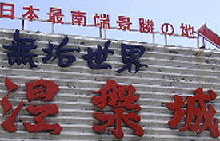
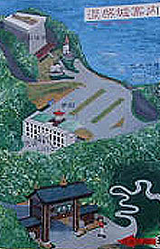
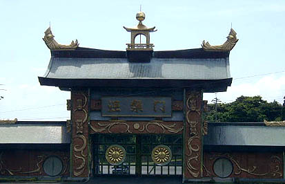
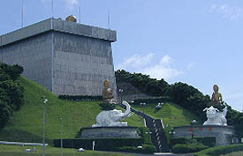
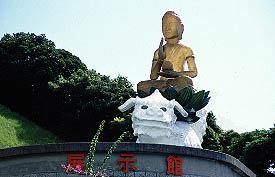
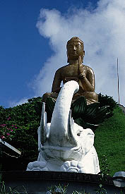
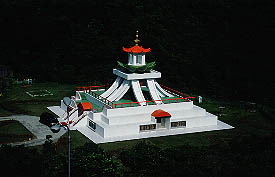
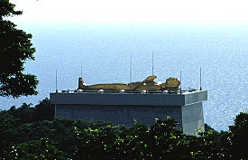

涅槃城/鹿児島県佐多町
薩摩半島の南、開門町のムー大陸博物館（寳台寳物館）にて涅槃城の存在を知った私はフェリーに乗り錦江湾を挟んだ対岸の大隅半島に渡った。
そのフェリーの中の売店の雑誌の品揃えが9割エロ漫画で一番上品な雑誌が女性自身だった事は今回の本題とは関係ないのであまり触れずにおこう。
♀♀♀♀♀♀♀♀
さて、涅槃城である。
場所は大隅半島最南端の佐田町の山中。佐多岬にも程近いここは間違いなく本土最南端の珍寺だろう。

ここも多宝仏塔同様、素通りを許さない勢いの看板が。無垢世界だって。くっくっく・・・

境内（？）案内図。関係ないが一番下の矢印のところに描かれている人の絵、何故かすんごいアフロヘアー。
門から一番奥の涅槃城までは歩いて行ける距離ではないので、行かれる方はそのつもりで。

で、山門の涅槃門である。ここから先は「無垢世界」。
多宝仏塔よりは幾らかマトモな感じもしないではないが、かなり強烈なインパクト。
屋根のシャチホコ、ハゼみたいだし。
で、車で進んでいくと信徒会館らしきものが丘の上にあり、こちらは入場禁止。
脇の道をさらに進むと広々とした駐車場の向うに涅槃城が出現する。
 こんなです。
左上の四角い建物の屋上に33メートルという巨大な涅槃像がある。下から見上げても頭だけがやっと見える程度。完成は昭和59年。
手前のふたつの仏像も遊園地状態。
 
涅槃城の内部は関係者以外立入禁止なので涅槃像を間近に見る事は出来なかった。
仕方ないので手前の展示館だけ見学する事にする。
展示館にはパネル展示を中心に平等大慧会についての説明、ここ涅槃城の説明などがされていたがあまり興味深いモノではなかった、というか真剣に読んでいたらここから一生出られなくなりそうな気がしたので適当に引き上げる。
その後、売店のおじさん（もちろん信者）から聞いた話では、涅槃城の内部は吹き抜けで壁面に12,496体の仏像があり、さらに中央に釈迦仏誕生像があるらしい。
で、天上には屋上にある涅槃像と全く同じものが下を向いているそうだ。
う〜〜〜〜〜ッ。中に入りたい〜。
その涅槃像はどこから見ても自分を見てるんだって。売店のおじさんがうっとりしながら教えてくれました・・・

土産屋の窓から見下ろすと変な建物。供養塔だそうで。

で、高台から見た涅槃城。仰向けの涅槃像というものは初めて見た。展示館の説明によるとこれが本当の涅槃の姿なんだって。
・・・ところで・・・
内部の天井に下を向いた涅槃像があるとの事だが、これってもしかして屋上の涅槃像の内側をくり抜いて凹凸反転したものを内部から見ているのではないだろうか？
恐らく屋上の涅槃像はFRPのような樹脂系のもののようだ。
ならば皮膜状の内側を仕上げるのは比較的容易であり、わざわざもう一つ涅槃像をつくらなくても済むからである。
何故こんな事をいちいち書いているかというと先程の売店のおじさんの「どこから見ても自分を見てる」というコメントが気になっていたのだ。
以前、ミャンマーで「どこから見ても自分を見てる」釈迦の顔のレリーフというものを見た。
確かにどの方向から見ても自分を見ている様に思える代物だったのだが、近付くとそれはレリーフが出っ張っているのではなく、彫り込んであったのだ。
陰刻と陽刻を間違えた故に起こる錯角現象だったのだ。
ここの涅槃城の内部の涅槃像というのもこのネガティブな涅槃像であれば「どこから見ても自分を見てる」現象が可能なのではないだろうか。
それにあんなに大きな涅槃像なのに建物の上にあって良く見えないというのも説明がつく。
そう、内側のネガティブな姿こそがこの涅槃像のメインの姿なのではないか。
ま、実際中に入っていないので想像でしかないのでアレですけど。そんな気がしまっす。
涅槃城の関係者の方、今度行ったら中、見せて下さいね。
多宝仏塔（ムー大陸博物館）に戻る方はこちら
2001.7.
珍寺大道場 HOME